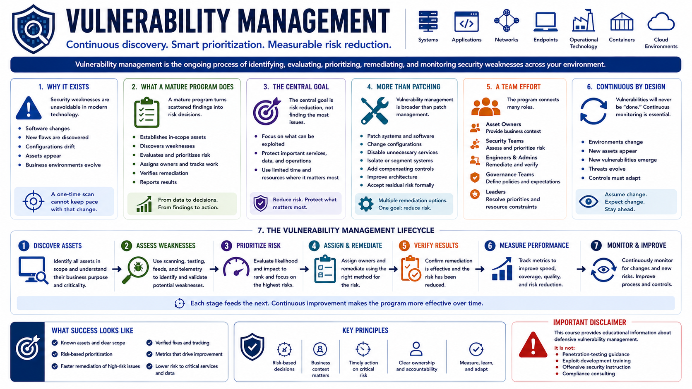

What Is Vulnerability Management?
Introduction to Vulnerability Management
Connecting to LMS... Progress: in progress
Version 1.0 | Date: 2026-06-18 | Educational overview of vulnerability management concepts.

Narration
Vulnerability management is the ongoing process of identifying, evaluating, prioritizing, remediating, and monitoring security weaknesses. It applies across systems, applications, networks, endpoints, operational technology, containers, and cloud environments.
The process exists because security weaknesses are unavoidable in modern technology. Software changes, new flaws are discovered, configurations drift, assets appear, and business environments evolve. A one-time scan cannot keep pace with that change.
A mature program turns scattered findings into risk decisions. It establishes which assets are in scope, how weaknesses are discovered, who evaluates them, how work is prioritized, and how remediation is verified and reported.
The central goal is risk reduction, not simply finding the largest possible number of issues. Teams focus limited time and resources on weaknesses that are most likely to harm important services, sensitive information, or critical operations.
Vulnerability management is broader than patch management. Patching is one remediation method, but organizations may also change configurations, disable unnecessary services, isolate systems, add compensating controls, improve architecture, or formally accept residual risk.
The program connects many roles. Asset owners provide business context, security teams assess risk, engineers and administrators remediate issues, governance teams define expectations, and leaders resolve priorities and resource constraints.
Effective programs use a repeatable lifecycle: discover assets, assess weaknesses, prioritize risk, assign and perform remediation, verify results, measure performance, and continuously monitor for change. Each stage feeds the next.
This course provides educational information about defensive vulnerability management. It is not penetration-testing guidance, exploit-development training, offensive security instruction, or compliance consulting.